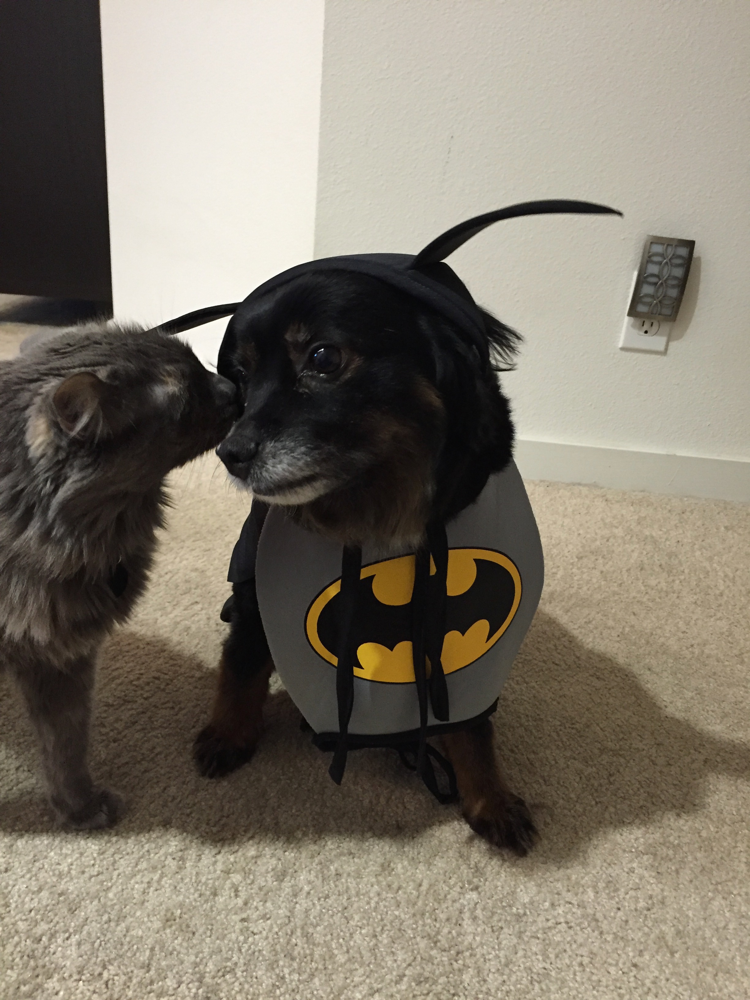

About Me
I am an artist, working and living in Irvine, CA. I make multi-disciplinary work, which allows me to experiment with unusual materials and methods of art making. My focus lies on the simulacrum of nature that blurs the line between landscape and man-made landscape.
I hope to continue studying art and art theories so that I can work with those who may be unfamiliar with such field; such as juvenile centers, prisons, mental institutions, and more.
You can find more about my workHERE!